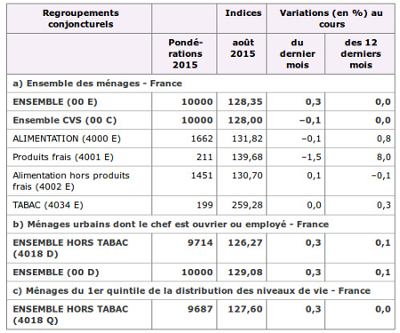

Introduction - cas utilisateurss
Un tableau est toujours complexe à utiliser avec un lecteur d’écran. Une personne aveugle n’a pas une vision globale du tableau. Elle le parcourt de manière séquentielle : une case après l’autre et ligne à ligne. Afin d’améliorer son expérience, les lecteurs d’écran offrent des fonctionnalités de parcours étendues en utilisant les flèches de direction.
Tableaux de données simples
Un tableau est considéré comme simple s’il ne possède pas de cellules fusionnées qui rendent la compréhension délicate et s’il ne présente pas une structure (notamment des sous-contextes) qui rend sa compréhension dépendante d’une mise en forme.
Lors de la phase de conception, il est nécessaire de prévoir un titre pertinent pour chaque tableau. Ce titre doit permettre de comprendre les données du tableau. Par exemple : « Chiffres d’affaires des différents secteurs d’activités. » ou « Accessibilité des lignes du réseau de surface RATP » dans l’exemple ci-dessous.
Accessibilité des lignes du réseau de surface RATP
| Équipements |
Nombre de lignes |
Pourcentage du total de lignes |
| Rampe d’accès |
260 |
70,46 % |
| Annonce sonore |
318 |
86,17 % |
Ces données sont issues du site data.gouv.fr. Leur exploitation dans ce contexte n’est faite qu’à titre d’illustration, elle ne relève en rien d’une statistique officielle.
Il est possible de masquer ce titre de manière accessible : il sera alors masqué visuellement, mais toujours accessible aux utilisateurs de lecteurs d’écran.
Tableaux de données complexes
Les tableaux de données complexes sont généralement des tableaux qui possèdent des cellules fusionnées ou des sous-contextes.
Voici un exemple de tableau de données complexe :
Nombre de gares et points d’arrêts TER, en fonction du type de handicap et du type de dispositif par handicap
| Malvoyants |
Aveugles |
| Obstacles contrastés |
Portes contrastées |
Obstacles détectables à la canne |
Guidage en braille |
| 73 |
65 |
103 |
0 |
| 138 |
103 |
Ces données sont issues du site data.gouv.fr (Accessibilité des gares et points d’arrêt TER aux personnes à mobilité réduite en 2013). Leur exploitation dans ce contexte n’est faite qu’à titre d’illustration, elle ne relève en rien d’une statistique officielle.
Comme les tableaux de données simples, les tableaux de données complexes doivent posséder un titre.
De plus, chaque tableau de données complexe doit posséder un résumé : le contenu de ce résumé doit être prévu lors de la phase de conception. Ce résumé a pour objectif d’expliciter la structure du tableau, en décrivant de façon factuelle son organisation spaciale. Ce résumé ne sera pas affiché visuellement sous le tableau : il sera contenu dans une balise HTML dédiée (caption).
Ci-dessous un exemple de tableau complexe (issu et adapté du site de l'INSEE). Vous y trouvez des en-têtes de colonnes fusionnées (« Variation (en %) au cours ») ainsi que des en-têtes qui titrent des parties du tableau (toutes les lignes fusionnées du type « a) Ensemble des ménages - France »).

Dans ce cas de tableau complexe, pour faciliter la lecture, il serait par exemple possible de découper ce tableau en 3 tableaux distincts, chacun correspondant aux 3 sections (a, b et c).
Si ce tableau reste en l'état, un résumé pertinent pourrait être :
« Répartition des ménages en France en fonction du type d'achats. On y trouve 3 grands regroupements :
- un premier regroupement concerne l'ensemble des ménages en France ;
- un second regroupement concerne les ménages urbains dont le chef est ouvrier ou employé ;
- un troisième regroupement concerne les ménages du 1er quintile de la distribution des niveaux de vie.
Pour chacun des regroupements :
- la première colonne représente les pondérations pour l'année 2015 ;
- la seconde colonne représente l'indice pour le mois d'août 2015 ;
- la troisième colonne représente la variation en pourcent au cours du dernier mois ;
- la dernière colonne représente la variation en pourcent au cours des 12 derniers mois.
Note : bien qu’il soit préférable que le titre et le résumé des tableaux complexes soient affichés, vous pouvez demander à votre équipe d’intégrateurs de les positionner hors écran sans utiliser de propriétés CSS qui les rendraient invisibles pour un lecteur d’écran (cf. Liens d’accès rapides dans le Guide de l’intégrateur RGAA 3).
Pour faciliter la compréhension d’un tableau complexe, on peut également le scinder en plusieurs tableaux simples. Toutefois, cette scission n’est pas toujours possible, car il peut y avoir énormément de redondance d’un tableau à l’autre. Aussi, une alternative consiste à scinder un tableau complexe en listes. Dans ce cas-là, on peut donc prévoir un lien « Version accessible du tableau » avec une liste en-tête / données, en-tête / données, en-tête / données, etc. Et on aura exactement la même restitution vocale pour une personne aveugle. De plus, pour une personne handicapée mentale, la répétition des en-têtes sera la seule façon de comprendre.